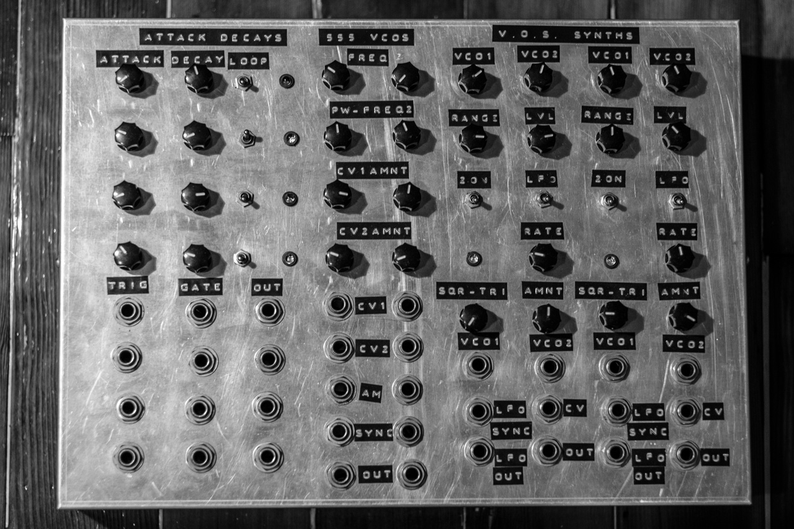
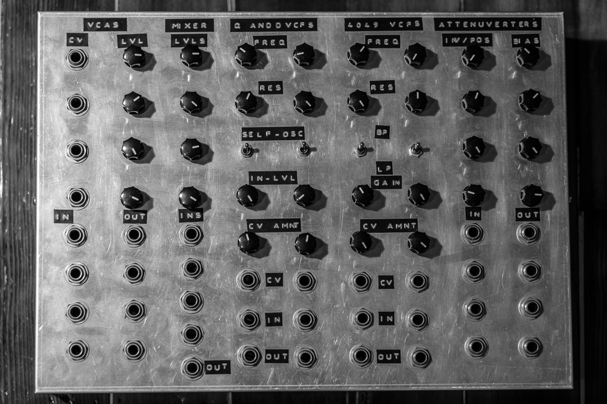
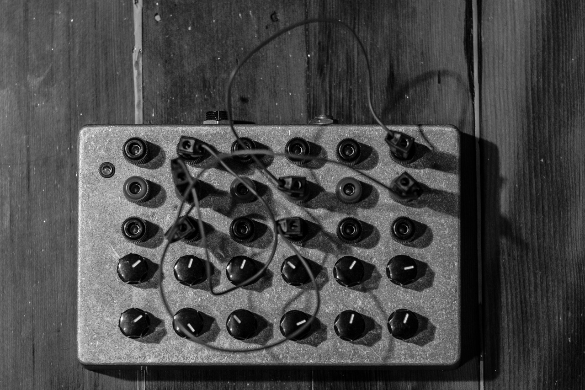
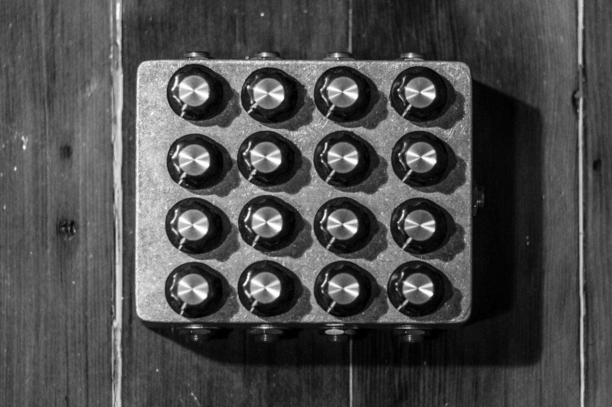

I built this to have a powerful drum sequencer that I could use with my modular synth without needing to use a computer. It does run on a Raspberry Pi, which is a small computer, but it does not have a screen or keyboard or mouse. The sequencer is written in node.js and it sends out trigger pulses and a clock as well as midi over USB. It uses a novation launchpad as the input device and display.
video - github page with instructions and documentation to build your own
***
This was the first box of two that I built which was an attempt to build a modular synth powered by 9v guitar pedal power supplies. I used a style similar to Serge synths where each panel has multiple modules, but I used 1/4 inch jacks more similar to Moog style modulars. Using a single voltage supply rail also presented challenges as most modular synth designs are intended for positive and negative voltage rails.
Modules:
***
The second box of the 9v synth system.
Modules:
***
This drone synth has six simple single transistor oscillators that each have a coarse and fine tune potentiometer. The output of the oscillators goes to the banana jacks in the middle row. The jacks on the top row are summed into the output and the bottom row is a gate input for each oscillator. Complex drone sounds as well as rhythmic patches can be made with this synth.
***
A four input and four output passive matrix mixer with an extra output jack on the right for the right channel. The extra jack makes it easy to mix four feedback loops together and listen to the output of the fourth without needing a splitter box or Y cable. Matrix mixers can be used to make anything from calm drone sounds to chaotic noise walls with guitar pedals attached to them. They can also be used as a powerful mixer for routing effects in parallel and serial.
***
I am available for shows in the Los Angeles area on short notice. I am also available to play in San Francisco with slightly more notice. Let me know if you would like me to play outside of these areas. The email below is the best way to contact me.
You can hire me to build kits or custom synthesizers or help with design of hardware or software synths and sequencers. I am also available for sound design and production. The email below is the best way to get in touch with me.
Email: trevor.baker.sound@gmail.com
Phone: 415 297 1258